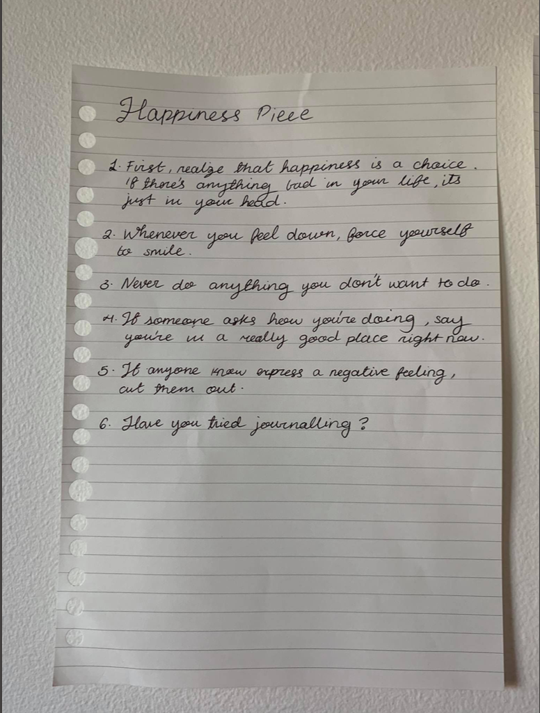

A guide
Algorithmic Art, Conceptual Art
Click to go through
This project critiques the idea of universal self-improvement guides by presenting a contradictory, step-by-step set of instructions. Inspired by algorithms—mechanical sequences of actions—each directive is literal yet absurd, highlighting the flaws in rigid life advice. Drawing from Yoko Ono’s Grapefruit, the work embraces handwritten, varied layouts to reflect the intention of each message. Pages are displayed as "pillars" of life improvement, with handwriting, pen thickness, and doodles reinforcing their tone. One page, Get in Shape Piece, was crumpled and torn to embody the frustration of following prescriptive advice